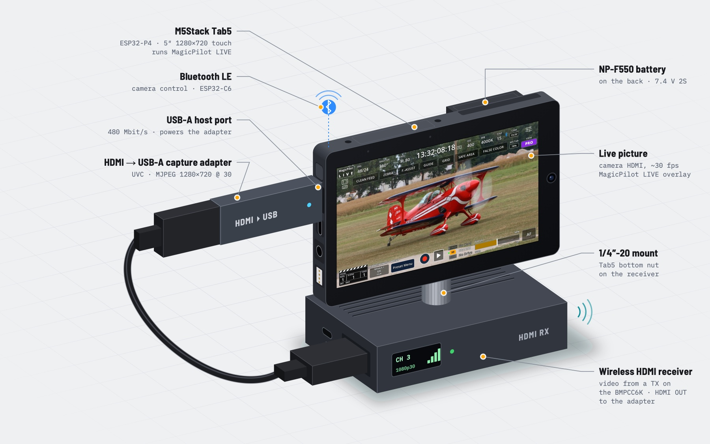
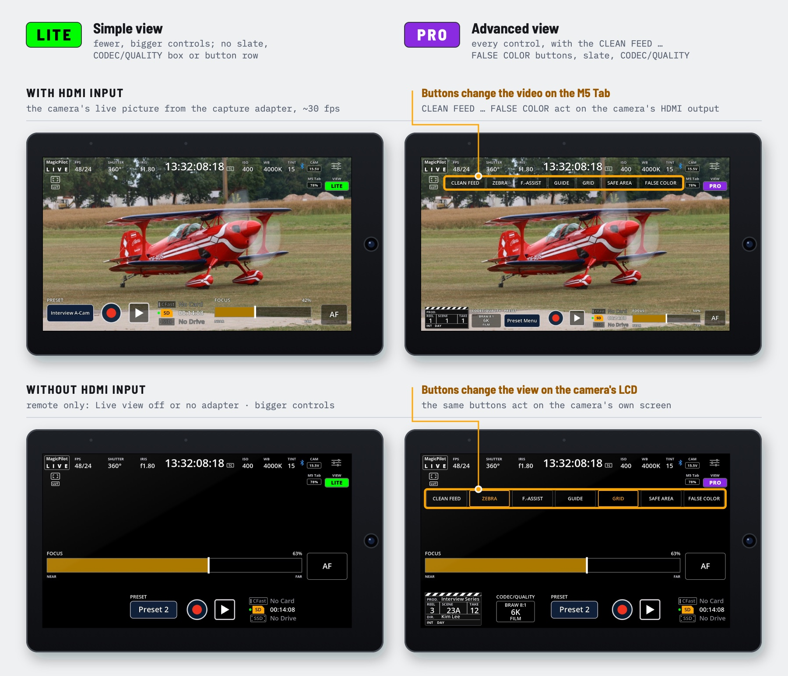

Firmware for the M5Stack Tab5
MagicPilot LIVE
A monitor and touch remote for the Blackmagic Pocket Cinema Camera 6K. The camera's live HDMI picture, with the camera's settings laid over it. Tap a setting to change it over Bluetooth LE.
No phone, no Wi-Fi, no Blackmagic Camera app.


Features
What it does
Everything the camera reports over Bluetooth, on a 5″ touchscreen next to the picture it describes.
Live picture
The camera's HDMI output, full screen in landscape at 30 fps. Spread two fingers to zoom 2× on any spot to check focus.
Camera status
FPS, shutter, iris, timecode, ISO, white balance, tint, LUT, recording and card slots, laid out like the camera's own screen. Tap a value to change it.
Presets
12 named presets with ISO, shutter, frame rates, white balance, tint, iris, codec, quality and resolution. Save them to a microSD card as readable JSON.
Slate
The camera's slate as a clapperboard. Tap for scene, take, INT/EXT and DAY/NIGHT; hold for every field, lens data included.
Focus
A focus slider from NEAR to FAR that moves the lens, and the camera's one-shot autofocus.
Record
Start and stop recording. The timecode turns red while the camera records.
Record settings
Codec and quality, resolution, dynamic range, project and off-speed frame rates, sharpening.
Display tools
The camera's frame guides, grid and safe area, plus zebra, focus assist and false colour, and the Tab5's own brightness.
Pairing
Asks for the camera's 6-digit PIN once, then finds and reconnects to the camera on its own.
Views
LITE and PRO, with or without HDMI
LITE keeps the controls few and big. PRO adds the CLEAN FEED … FALSE COLOR buttons, the slate and the CODEC/QUALITY box. The VIEW badge switches between them.
Without HDMI input (live view off in the settings, or no capture adapter) the Tab5 is a Bluetooth remote with bigger controls. With HDMI input, the CLEAN FEED … FALSE COLOR buttons change the video on the Tab5; without it, they change the view on the camera's own LCD.


Screens drawn by the firmware's own UI code, over an example picture.
Hardware
What you need
M5Stack Tab5
ESP32-P4 with a 5″ 1280×720 touchscreen; its ESP32-C6 handles Bluetooth. Tested on board version 3 with the C6's factory firmware.
HDMI to USB capture adapter
A UVC stick with MJPEG, such as an MS2109 or MS2130, in the Tab5's USB-A port, the only high-speed port. The USB-C only takes power in and carries flashing and the log.
Blackmagic Pocket Cinema Camera 6K
With Bluetooth on. The 6K G2, 6K Pro and 4K use the same protocol but are not tested.
Optional: a wireless HDMI transmitter and receiver between the camera and the adapter, an NP-F550 battery for the Tab5, and a FAT32 microSD card for presets. Cards above 32 GB come as exFAT and need formatting first.
Inside
How it works
Bands through SRAM
The P4's pixel-processing accelerator (PPA) reads PSRAM slowly, so the GDMA copies 32-row bands into internal SRAM, both cores draw the camera UI into each band there, and the PPA rotates it onto the portrait panel.
Measured
With 1280×720 at 30 fps MJPEG and the camera connected: 30.0 fps shown, no frames dropped. Decoding takes about 16 ms, rendering with the camera UI 26–29 ms.
Lag
Most of the lag is the capture adapter: cheap ones buffer 1–3 frames. Capturing at 60 fps lowers it, even though about 30 fps are shown.
Bluetooth
The P4 has no radio. The Tab5's ESP32-C6 runs the Bluetooth controller over SDIO, and writes go through a queue that keeps the newest value of a dragged slider.
Limits
What Bluetooth can't do
The camera doesn't send card names, capacity and formatting, audio levels, custom white balance, zebra, focus assist, false colour or playback over Bluetooth, so the Tab5 can't show them. It reports its LUT but takes no command that switches it on or off.
It also refuses switching between BRAW and ProRes, ProRes resolutions and Film dynamic range. The Tab5 tells you when a setting has to be changed on the camera.
Get started
Build and flash
PlatformIO (pioarduino platform):
pio run -t upload --upload-port /dev/cu.usbmodemXXXX
pio device monitorOr ESP-IDF 5.5.3 or later:
idf.py set-target esp32p4
idf.py build flash monitor- The first time, the Tab5 asks for the 6-digit PIN from the camera's Setup menu, page 6. After that it reconnects automatically.
- Settings live in
menuconfig→ MagicPilot LIVE: capture size and frame rate, Fill or Fit scaling, orientation, touch flip, backlight. - If PlatformIO reports “Python's lzma module is unavailable”, install
xzwithbrew install xz. sdkconfig.m5stack-tab5is generated fromsdkconfig.defaults. Delete it after changing the defaults so it is regenerated.